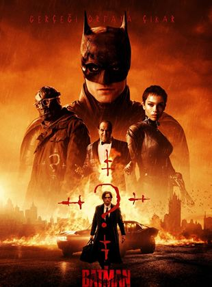

The Batman, suçluların kalplerine korku salan Batman'in Riddler isimli bir seri katille mücadelesini konu ediyor. Batman olarak iki yıl sokaklarda dolaşmak ve suçlulara korku salmak Bruce Wayne'i Gotham City'nin karanlığının kalbine sürükledi. Gizemli bir seri katil Riddler, şehrin seçkinlerini hedef alıp bir dizi sadist ve hain saldırı gerçekleştirdiğinde Batman, Riddler'in izini sürmeye başlar. İpuçlarınını peşinden giden Batman'in yolu bu süreçte Catwoman olarak bilinen Selina Kyle, Penguen olarak da bilinen Oswald Cobblepot ve Carmine Falcone gibi karakterlerle kesişir. Batman kurduğu yeni ilişkilerin de yardımıyla suçluların maskesini düşürmek ve Gotham Şehri’ni eski huzuruna kavuşturmak için zorlu bir mücadeleye girişir.
